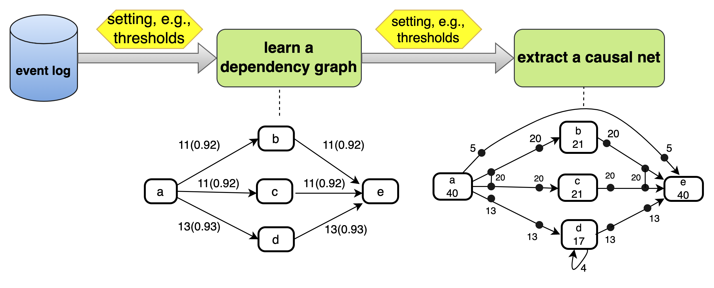

Introduction to Process Mining with Implementation of a Webservice
In this practical course, I implement two process mining algorithms: Alpha Miner and Heuristic Miner.
Main Reference:
[1] W.M.P. van der Aalst, Process Mining: Data Science in Action, vol. 2, Springer, 2016, doi: 10.1007/978-3-662-49851-4.
can be seen as a means to bridge the gap between data science and process science.
The idea of process mining is to discover, monitor and improve real processes by extracting knowledge from event logs readily available in today’s information systems.
A discovery technique takes an event log and produces a model without using any a-priori information. An example is the α-algorithm.
Conformance checking can be used to check if reality, as recorded in the log, conforms to the model and vice versa.
The idea of enhancement is to extend or improve an existing process model using information about the actual process recorded in some event log.
The first process discovery algorithms that could adequately deal with concurrency. It searches for specific patterns in the event log (log-based ordering relations). It consits of 8 steps as shown on the left graph.
Input: event log in xes format
Output: Petri net as process model
Although the α-algorithm should not be considered as mining technique that can be used in practice, it provides the basis for many other process discovery techniques.
More information can be found in [1] Chapter 6.2 and in [2].
Petri nets provide a higher-level representation of the process models and allow for a compact representation of concurrent behaviour in processes.
Petri nets are capable of describing sequential, parallel, choice, and loop execution between various activities in the processes.
Circle: place; Rectangle: transtion/activity
More information can be found in [1] Chapter 3.2.2.
Heuristic mining algorithms take frequencies of events and sequences into account when constructing a process model.
It consists of two main phases. Firstly, the dependency graph will be generated by counting frequencies. Secondly, a causal net will be extracted from the event log.
More information can be found in [1] Chapter 7.2.